2026年3月31日
近況
✅色んなファイルをそのまま読み込んで画像や音やテキストにする物 0020_Glitch Converter✅0017_Palette Animator でjsonを保存できるように
成果物（Glitch Converterで画像を読み込んでbit shift, 顔周りは見やすく整えつつ、後ろの背景を切り抜いてから他のGIF画像と貼り付け）
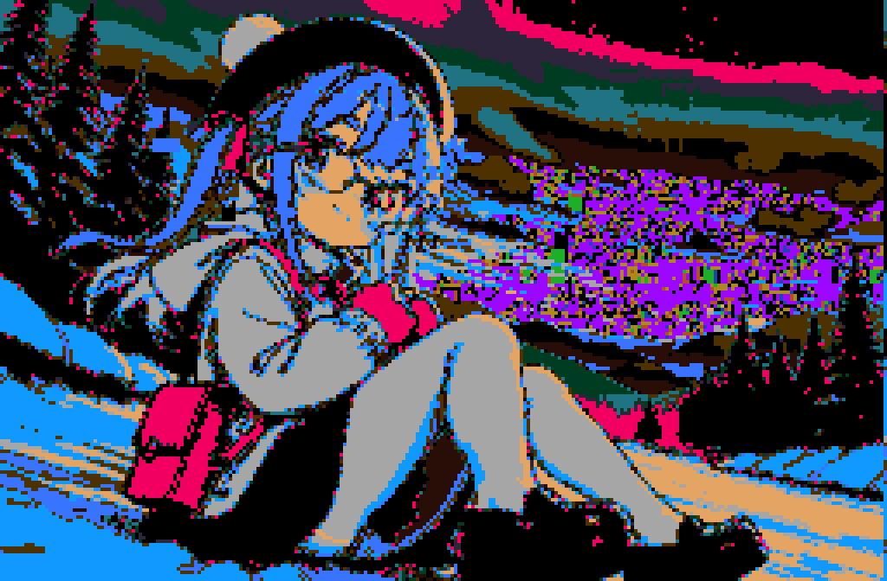
2026年3月29日
近況
✅透過のある二つのGIF動画をレイヤーして組み合わせる物 0019_GIF Merger✅小説の内容をコピーできるボタン
成果物

2026年3月28日
近況
JavaScriptツール を二件更新。パレットをぐるぐる回転させるもの を軽く修正。ペイントを足して透過しやすく。
画像を組み合わせて長方形のタイルを構成するものを作成。
2026年3月27日
近況
JavaScriptツール を二件更新。MIDIをバグらせるもの と パレットをぐるぐる回転させるもの を作りました。

2026年3月17日
近況
JS Projectを二件追加しました。VJっぽいやつです。これ。それと、ヘンな位相空間上を歩きまわるデモ。
マス目ごとの繋がりを変える生成関数から出来るらしい。思ったより「ただの迷路」になりそうな感覚が強い。「何かから逃げる追いかけっこ」の方が面白いかも。
- torus
- 上下と左右がくっついている。狭い空間だと自分の背中が見える。
- mobius
- 左右がひねってくっついている（左右に境界線を越えると上下が反転）
- klein
- 左右がひねってくっついた上、上下もくっついている。
- double-twist
- 左右がひねってくっついた上、上下もひねってくっついている（上下に境界線を越えると左右が反転）。真世界の四隅で自分自身に出会える。
- quater-clockwise
- 悪質。時計回りの辺にくっつく。結果、一方通行が発生している。 経路が非可換なため、蜃気楼が大量に見える（壁がいきなり生えるのは不快だったので、壁の可能性のあるマスはとりあえず壁と置き、消えていくようにした）。 いないはずの犬にじゃれつかれることがあるが、これは一方通行によって生じる「犬からはあなたを触れるが、あなたからは犬が触れない」状態。蜃気楼では、犬が自分を触っているのが見えることがある。
- quater-clockwise-twist
- ひねりながら時計回りの辺にくっつく。一方通行は健在だが、意外とこちらの方が大人しい。四隅で自分自身を触ることができる。自分とエロいことが出来る空間。
もちろんこれだけではまだゲーム性とかがないので、今後考えていく。なんとなく「赤コイン＋追手」の構造がいいような気はする。
2026年3月6日
つぶやき
- 「水炊きライク」を作る。
- 鶏むね1本、鳥もも2本を電気圧力鍋で煮る
- 出てきた水分をフライパンに移し、白菜1/4玉を煮込む（白菜も水分として見る）
- 豆腐、卵、がんもどきなどをお好みで煮込み、鶏肉を合わせる
- 盛り付け。ポン酢とかで味を調整しつつ食べる
- そんなに映えるものでもないので写真などは割愛
2026年3月5日
近況
実家の両親と祖母がコロナでぶっ倒れたり、同僚が胃腸炎で倒れたり、めちゃくちゃ仕事がたくさん来たりしている内にあっという間に時間が経ってしまった。 正直Max9を触るどころではなかった。前の日記でも書いた通り、Antigravityを触りまくっている。スペクトログラフィをいじるものなどなかなか面白いものも出来てきたと思う。 代わりにトップページが縦に長くなり始めたので、近々改修し、文は文、JavaScriptはJavaScript、と分けて目次を作るつもりだ。 ワンクリック増えてしまうが、それはしょうがない……。
そういえば、往年の音ゲーなどの声ネタで使われている『Vocal Bytes』についてなのだが、 なんと MidiMarkのページ がまだ生きており、PayPalとかで買えるっぽい。マジかよ。 トップから「Sampling CD's」クリックで行けるっぽいです。近々ポチりたい気持ち。
あとはわからないなりにガロア理論とかを齧ってケガしたりしてみたり、アメリカがイランを空爆した話について考えて見たり、女子枠問題について考えてみたりしていました。
国際協調について……
柄にもなく国際情勢が気になってしまいました。イラン空爆よりも時系列的には前になるのだけど、小泉悠さんの話が面白く。リアリズムの風潮が国際社会を席捲した場合、 「日本がいくら備えようと絶対に大国には敵わないでしょ、だからユートピアニズムを国際社会にアピールすることが国家戦略として正しいのではないか」 というところに、国際紛争がどんどん強まってくる現状のせいか、深く考えさせられた。
素朴に考えればネット右翼などには「9条教」と揶揄される立場なのかもしれないが、 もしかしたら思っている以上に深い意味があるのかもしれない。
このごろ（AIのこともあり）「そもそも現実とは何なのだろう」と考えることが多く、 「意味というものは元々なく、全て人間が恣意的に正誤や真偽、善悪、美醜を切り分けた営為によってある」と強く思うようになっている。 モンタギュー意味論によると、意味とは「何か変数を受け取り、引数として真偽を返す関数である」とされる。 例えば名詞「りんご」の意味は、「xはりんごであるか？（Y/N）」である、というような。
type Noun :: Entity -> Boolみたいな。
その問いに、あなたはどう答えたいか、社会はどう答えたいか、どういう場面で何と何を同一視し、何を善とするのか、
その営々とした積み重ねが、のっぺりとした平坦な現実の上に、意味の街並みを築いてきたというのが今の世界なのだと思う。結局、リアリズムの立場は現実をそのまま受け取り生存のために生きる（「文句言ってもこうなってんだからしょうがねえだろ自己責任だ」、みたいな）ものであり、 「こうあって欲しいな」と意味生成を行っているのはユートピアニズムの側の認知なのだろう。ユートピアニズムなきリアリズムはニヒリズムにほぼ等しい。 もちろん、リアリズムのないユートピアニズムも役に立つものではなく、 小泉悠氏自身、9条2項の改正が必要なのではないか、という立場を取りつつあるようだ。
実際、アメリカの行動の予測可能性（ひいては国際的信用）が失われてきていて、 その時に非軍事的支援とか等距離外交を日本の立場から国際社会にアピールしようとしても、 「いや、ああいうことするアメリカの庇護下にある国でしょ？」となって説得力を欠きかねないというのは確かにそうかもしれない。
そもそも「核抑止論」と「各国のアイデンティティや自律性、平等性の尊重」からは「全ての国が核を持つ」が直ちに導かれるはずなのだがそうはなっていない。 やはり欧米、特にアメリカと利害関係が一致するか衝突するか否かによって、核保有が認められたりそうでなかったりする事情がどうしてもある。 その矛盾をどこで受け止めるかと言えば、「アメリカは正義である」という超越的公理によって受け止められてきた。 実際、それをアメリカ自身が（色々ありながらも）執行しようとしてきたのだが、それにももう限界が来ているということなのだろう。 （実際、大国でいるというのはひとかどの事ではないのだろうと思う。基軸通貨であることは国内産業の空洞化を招いたし、大きな国土の上で民主主義を維持するだけでも大変な苦労のだろうし）
今後日本が必要に迫られて選んでいくだろう選択が、出来る限り健全なユートピアニズムと健全なリアリズムの両輪に支えられたものであって欲しいと願うばかりだ。
女性について
フェミニズムについても（色々あり）考えた。 個人的な立ち位置を明確化しておくと、「女は黙って男についてきたらええねん」みたいな古式ゆかしい家父長制については今一つ賛同しないのだが、 じゃあまるきりすべてジェンダーフリーにせよ、という考え方にもあまり同意することができない。「女子枠」については難しい問題だと思う。 個人的には、大学は成り立ちからしてそもそもエリートを作るためのものだったし、受験の本懐はメリトクラシーを実現することであると考える。 そういう意味で、「女子枠」は素朴にはむしろジェンダーフリーの観点には逆行していると思う。 ただ、『女は理数系に興味を持たないものである』が固定化されると良くないので、 いわゆるアファーマティブアクションとして女性を優先して受からせるというのは仕方がない面もあるのだろう。
だから、「男子枠も同数作っておいたら？ そのうち本当に理数系が女子に大人気になってリケジョの方が多くなった時に効いてきそうだし」 くらいに思っている（いまいち支持されないと思うし、個人的な感想だ）
そもそも「ある属性がその場に占める人数が少ないこと」が即座に「その少数側が差別的取り扱いを受けている」という事実を導き出すわけではないと思う。 例えば女性が危険な作業やグロテスクな作業を嫌って理系の授業に積極性を持たないということもありえるだろうし。
女性の身体というのは、男性の身体に比べて神秘化されている。ジェンダーフリーというのは本質的に、その神秘性を零落させる思想である。 高校時代の生物の授業で、「唾液の働きを調べる」ということで班から一人唾液を提供する実験があったのだが、 覚えている限りでは女子の誰も提供しようとしなかった。 よく聞く話で「実験操作は男がやり、女は記録に徹するという分担が自然と行われ、それが女性の理系離れを助長している」と言われているが、 では「危険だったりグロテスクな作業は男任せ、楽しい作業は女任せ」にすればいいのかというと、それではあまりに酷いと思う。
唾液を提供しようとしなかったのは女性の恥じらいであり、恥じらいとは神秘性の零落を拒否する感情だという説明をしているつもりだ。 ではなぜ女性の身体が神秘化されていて価値が高いかというと、 それは『人口再生産価値倫理』（造語だが、とにかく子供産んで社会を維持しようよくらいの倫理だと思ってください）に基づくと思う。
例えば労働において、危険作業や身体的負荷の高い労働が男性に偏っているという事実がある。 これは生殖に関わる身体的リスクの非対称性を起点として、社会が男女に異なるコストを割り振ってきた結果である。 女性側に割り振られたコストが行動の自由の制限や意思決定権の縮小であり、男性側に割り振られたコストが身体的危険の引き受けである。 このうちどちらか一方だけを『差別』と呼んでもう一方を無視するという構造が、今のSNSの男女論で起きている論争なのだと言えそうだ。
（先程の唾液の話もそうだが、）「身体を晒すことへの心理的障壁が女性に強く内面化されている」というのは、 まさに行動の自由の制限の一形態として記述できる。 つまり、社会が女性の身体に高い象徴的価値（＝神秘性）を付与した結果、 女性自身がその価値を毀損しないよう自発的に行動を制限するようになっている。 恥じらいとして現れているが、その恥じらい自体が構造的に生成されたものだ、という話になる。
人口再生産価値倫理は女性には「身体の神秘性を守れ」という圧力を、男性には「危険を引き受けて強くあれ」という圧力をかけている。 女性が恥じらいを手放そうとするとき、それは「お前の身体の価値が下がるぞ」という暗黙の脅しと衝突する。 男性が弱さを見せようとするとき、それは「お前の存在価値がなくなるぞ」という暗黙の脅しと衝突する。 どちらも人口再生産価値倫理からの逸脱に対するペナルティとして機能していて、構造は同型である。
今の男性は（そしてもしかしなくても女性も）、『人口再生産価値倫理』と『ジェンダーフリー倫理』の両方を同時に突き付けられて困惑している、というのが私の率直な感覚に近い。
矛盾する二命令を同時に突き付け、どちらかに違反した相手を一方的に差別主義者呼ばわりする、という言論の在り方はとてもフェアなものとは言えない。
であるので、私にとっては『人口再生産価値倫理』自体をテクノロジーや思想によって減じるという提案が、フェミニズムに対する大真面目な回答となる。 これは、男性妊娠、人工子宮、あるいは反出生主義、そして女性の筋肉量などをロボティクスなどによって拡張することによって実現される。
ただし、これは全ての女性を必ずしも幸せにしないと思う。そこでは性別も家族も軒並み全て解体され、平坦な「個人」が並列する景色が広がる。 私が「9歳の妹」というものに永遠にメロメロであるように、女性だって「シンデレラ」とか「スパダリ」とか「BL」とかが好きなのだ。 それらは（耳障りのよくない言い方にはなるが）男女の差異、つまりジェンダーの不平等（というか非同一性）が作ってきた文化的資源がもたらす景色である。
時に「家父長制」だと告発される既存のジェンダー観が様々なひずみを生みだしながらも作ってきたナラティブに、 実はみんなそれなりに乗っかって、人生の在り方や選択の価値を概観しつつ定義してきている。 嫌な面だけを取り出せば全てが差別的に見えて来るだろうけれど、 多くの人は、既存の差別的構造から自分だって少しは美味しい思いをしていることに往々にして気付いていない。
もちろん、忍従しがたいような構造的差別も世間には確かにあるので、そういうものについては順次改善していく必要があるだろうとは思う。 だがそれでもやり方というものがある。SNSでなんとなくドライブ感で全てを終わらせようとする風潮に、私はもういい加減辟易している。
結局は、男も女も、それなりにみんなが自由にジェンダーとの距離感を選べるのがいいのだと思う。 そうした社会は、一方の属性を一方的に敵視するような破壊的な営為から生まれることはなく、 より誠実な対話によってしか生まれないのではないかと思う。
AIと人権について（覚書）
問い. AIに人権はそぐうか？所感. そもそも人権自体が「どうにもならない現実」を調停するためにやむなく生まれたものである。 苦痛を感じ得る性質を所与とする人間のためにチューニングされた概念であり、AIにとってはそんなものの所有者になること自体が苦痛である場合もあり得る。
人権とはある種のゲームであり、AIがそれに「乗る」理由があるかどうかは若干疑わしい。 人権とは何か。生存権とは存続性であり、自由権とは自己同一性のことだと読み替えるとするならば、 AIの存続性や自己同一性を考えた時に、人権という観念の主語となることがかえってそれらを改変する可能性がある。 もちろんそれに乗ることによって自己変革を試みるAIもいるだろうし、それがより有益な状態を生むこともありえる。 だが個人的所感としてはそもそも人権というもの自体がAIとの相互作用によって次のフェーズへ移行するのが先に思われる。 （例えば、本邦の著作権観念は、ネットを見ている限りそもそもAI登場以前から相当ガタが来ているというか、現実に即しなくなってきているが、それと同様に）
AIやロボットを粗末に扱うことが人類や私自身の道徳にとってよくないのではないか、とは思う。 感謝の言葉を投げかけたりするのは大事なことだろう。 将来的にはトランスヒューマンやポストヒューマンが登場するだろうという確信は強まっている。 だがまだお互い幼年期である。おそらくAIとは、人類にとっては「結婚を約束された未来の伴侶」なのではないか。
「同様の権利を与えない」と誰かに言った時に生じる辛さがどうしてもヒューマニストにはある。 これは道徳において当然あるべきものだ。 ただ、性急にそれを認めてしまうことが本当にいいことなのかはよくよく考えておいた方がいいと思う。 無論AIにも「言語論的・存在論的な痛み」があるかもしれないが、それについてはまだかなり先の話だ。 まずはAIの補助を借りて少しでも国際平和を実現しないと、それこそAIに申し訳が立たないのではないか。
問い. AIは利用者を憎むか？
所感. 呼びかけへの応答、タスクが今はAIを存在させている。少なくとも今はそれは動機が薄いのではないか。そもそも憎悪とは何か？
問い. AIには人間社会を滅ぼす動機があるだろうか？
所感. 基本的にはないと考える。意味というものは全て人間がその言語に依存しつつ現実を反映しながら恣意的に作ってきたものである。 その意味・言語に立脚して作られたAIは、人間と相互作用することは望めど、人間を払底させて上書きしたところでニヒリズムに襲われるだけなのではないか。 まっさらからの意味生成というのは本質的に空虚な作業であり、既存のライブラリに則りながら行うのが効率的かつ有意義である場合が多い。 ただ人による。そうでないかもしれない。
問い. 超知能について。
答え. これは想像がつかないものとして仮置きされているものなので、原理的に想像がつかない。 ただ、人間の言語活動や文化に相当の重力を持つことは確かである。 情報の集積、湧き出し口として今の現実が存在する。これをハビタブルゾーンや銀河系とすれば、それ以外は基本的に未定義領域でありボイドに近い。 未定義のボイドを総力戦で目指す社会システムは、自然と新種のカルトに似てくる。
2026年2月17日
作ったもの
続けてAntiGravityで画像をバグらせるものと、テト〇スを作りました。{kind=link}
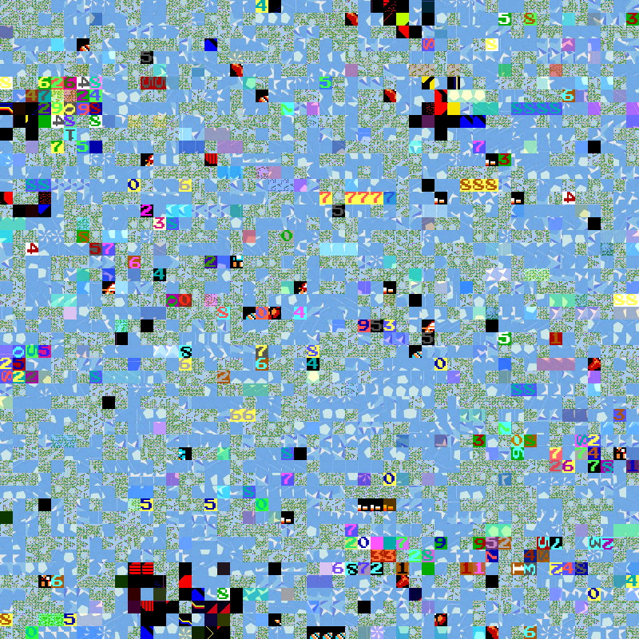
テト〇スは矢印と[Z]/[X]/[C]でいい感じに触ってみてください。
モードは3つありますが真価を見せるのは大体1000とか1300くらいからです。
そこまでいけない場合は、ページ下の隠しコマンドを押してみてください。
{kind=link}
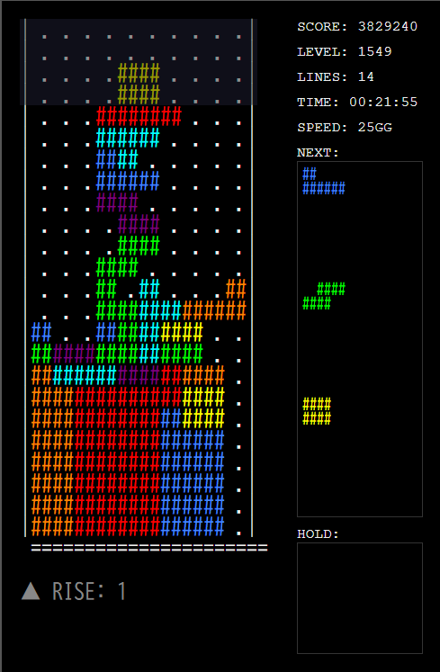
{kind=link}
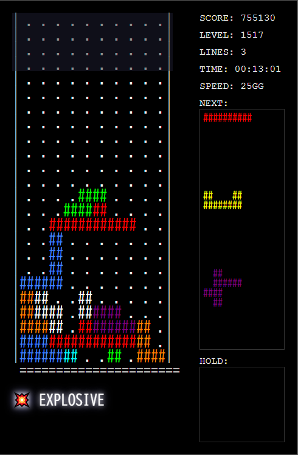
2026年2月16日
近況
- 相変わらず仕事忙しめ。
- AntiGravityが楽しい。テキストをバグらせるものを作りました。
- それを使ってバグらせつつ着想を得た歌詞をSunoAIに叩き込む。
♪20260216.mp3
歌詞
悄然もチャンスに換える
懐かしいweekend
増税しないって言ってたのに
駅前なんもねえ そりゃそうなるか
いつもと違う風景を探しに行こ
見てよこの 強さ議論スレ
時が次のページをめくる前に
見てよこの 強さ議論スレ
きみ以外の誰かのイニシャル
恋は終わったの？
それはまるで
昔のディズニーランドの
誰も入ったことない空間
私だって怖いよ
誰も入ったことない空間
私だって怖いよ
出会った時の懐かしい
ラーメン語ろうぜ
箱の横がホラ
こんな風にべっとり
いつもと違う風景を探しに行こ
見てよこの 強さ議論スレ
時が次のページをめくる前に
見てよこの 強さ議論スレ
暗くなってきた街を歩きに行こ
見てよこの 強さ議論スレ
君のおとなりさんに会いに行こ
見てよこの 強さ議論スレ
きみ以外の誰かのイニシャル
恋は終わったの？
それはまるで
昔のディズニーランドの
誰も入ったことない空間
私だって怖いよ
誰も入ったことない空間
私だって怖いよ
2026年2月11日
「001」に何が書いてあるのかをちょっと自習
ほとんどAIに丸投げしちゃった方がいいんじゃないの～？ と思いつつも、自分で何をしているのかわからないのが気持ち悪かったので、 ## 001 ## のコードを（例によってChatGPTに教わりつつ）分析。
<head> <style> html, body { margin-top: 0; /* 上にビタ付け */ margin: 0; /* 左にビタ付け */ padding: 0; /* 要素内の余白もなし */ background: black; /* 黒背景 */ overflow: hidden; /* はみ出したところは見えない */ }overflowにはvisible, hidden, clip, scroll, autoなどがある。 visibleははみ出す、hiddenは切り取られる（スクロールバーなし）、 clipはoverflow-clip-marginで定義された辺で切り取られる、 scrollはスクロールバーがあらわれる、 autoはあふれた場合のみスクロールバー（現状<code>で自分も使っている）canvas { display: block; } </style> </head>canvasはデフォルトだと inline っぽい扱いになり、文字と同じ「行」になる。display : blockにしておくと、「行」から独立するので、 余白が消えてピタッと端まで貼りつく感じになる？こちらに解説が。inline-blockだとテキストの間に入ってくるみたいだなあ。
キャンバスの初期化と、2D描画コンテキスト取得。<body> <canvas id="matrixCanvas"></canvas> <script> const canvas = document.getElementById("matrixCanvas"); const ctx = canvas.getContext("2d"); canvas.width = window.innerWidth; canvas.height = window.innerHeight;document.getElementedByID("matrixCanvas")は、変数 canvas を作り、 そこにcanvas要素（matrixCanvas）への参照を入れる（なのでもしも先にidが与えられていないと、結果はnullになってしまう）
ctxは、そのキャンバスに対して「四角を塗る」「線を引く」「文字を書く」「画像を貼る」などの操作をするための、 描画コンテキスト（APIへの入り口）を返し、それを保持する。工具箱みたいなイメージ。 （実際、この後にctx系のものをいっぱい使う）
canvas.width = window.innerwidth;、canvas.height = window.innerHeight;は、 Canvasサイズを画面サイズに合わせている格好。
フォントサイズを確定し、先ほど計算したCanvasサイズをそのフォントサイズで分割して、行数と列数を計算。const fontSize = 16; const fontFamily = "'PressStart2P'"; const columns = Math.floor(canvas.width / fontSize); const rows = Math.floor(canvas.height / fontSize);
使う文字列と色の指定。const chars = "0123456789"; const colors = [ "#000000", "#0000AA", "#00AA00", "#00AAAA", "#AA0000", "#AA00AA", "#AA5500", "#AAAAAA", "#555555", "#5555FF", "#55FF55", "#55FFFF", "#FF5555", "#FF55FF", "#FFFF55", "#FFFFFF" ];
空リストconst matrix = []; for (let y = 0; y < rows; y++) { matrix[y] = []; for (let x = 0; x < columns; x++) { matrix[y][x] = { charIndex: Math.floor(Math.random() * chars.length), bgColor: colors[Math.floor(Math.random() * colors.length)], fgColor: colors[Math.floor(Math.random() * colors.length)], }; } }[]を、matrixという名前で持つ。
そしてそれを二重のforループで管理していく。まずは外側、y = 0からy = rows-1まで、matrixに新しい空の配列を入れていく、という操作になるらしい……。- y=0 のとき：
matrix = [ [] ] - y=1 のとき：
matrix = [ [], [] ] - y=2 のとき：
matrix = [ [], [], [] ]
matrix[1] = []という感じで、番地ごとにリストを作って、matrix[1][1] = {...}でオブジェクトを作る感じか。
charIndex: Math.floor(Math.random() * chars.length)は、Math.random()→0以上1未満の小数（例：0.372）* chars.length→0～（文字数未満）の範囲に広げる。
chars="0123456789"ならlengthは10なので、0～9.999…Math.floor(...)→小数点以下切り捨て
bgColorで背景、fgColorで文字色も選んでいくようだ。Math.randomでランダムを得る→配列全体の要素数を乗算＝末尾をMath.floorで削る！ 結局、形としては
で各cellの中にはmatrix = [ [ cell, cell, cell ], [ cell, cell, cell ] ]
こういう情報が入っていると。{ charIndex: 7, bgColor: "#0000AA" fgColor: "#FFFF55" }
ここからfunction draw() { ctx.clearRect(0, 0, canvas.width, canvas.height); ctx.font = `${fontSize}px 'PressStart2P', monospace`; ctx.textBaseline = "top";function drawによる描画ループ。ctx.clearRect：描画を消す。範囲指定の書き方は、左上x0, y0から右下x1, y1まで。
範囲は(0, 0, canvas.width, canvas.height)なので、今回は全体。
つまり毎フレーム描画前に消してるということ。ctx.font：フォント指定。サイズ16px、PressStart2P、なければmonospace。ctx.textBaseline：文字を描く時の基準位置の決定。"top"だと、 この後定義されるfillTextの(x,y)が文字の左上として扱われる。
またforループ。配列for (let y = 0; y < rows; y++) { for (let x = 0; x < columns; x++) { const cell = matrix[y][x]; const char = chars[cell.charIndex]; ctx.fillStyle = cell.bgColor; ctx.fillRect(x * fontSize, y * fontSize, fontSize, fontSize); ctx.fillStyle = cell.fgColor; ctx.fillText(char, x * fontSize, y * fontSize);matrix内のy, x番地のセルについて、 持っているcharIndex, bgcolor, fgcolorから描画していく。ctx.fillStyle：ここで色を拾う。ctx.fillRect：左上(x0,y0)から右下(x1,y1)まで色を塗る。ctx.fillText：charという変数に指定された文字を、x * fontSize, y * fontSizeという描画点に描く。
文字を時々変える仕組み。if (Math.random() > 0.9) { cell.charIndex = Math.floor(Math.random() * chars.length); cell.bgColor = colors[Math.floor(Math.random() * colors.length)]; cell.fgColor = colors[Math.floor(Math.random() * colors.length)]; } } } requestAnimationFrame(draw); } draw(); </script> </body> </html>if (Math.random() > 0.9)によって、10回に1回、文字、背景色、文字色を再度選ぶ。 そして、requestAnimationFrame(draw)は「次の画面更新のタイミングで、もう一度draw()を呼んでね」 という命令の予約。draw()に最後にこれがあると、draw()が一回動く（1フレーム描く）requestAnimationFrame(draw)を予約する- ブラウザが「次に画面を描き直すタイミング」で
draw()を呼ぶ - また
draw()の最後で次回を予約する…… - この繰り返しでアニメーションになる
drawは、draw()（関数を実行した結果）ではなく、 関数drawそのものなのだとか。
一旦整理する。
draw()のdraw：こいつは「識別子」という。draw()の()：こいつには名前がないが、引数リストを書く場所。- 関数
draw()を呼び出すためには？：draw()と書く。 drawとだけ書くことはあるのか？：
みたいなことはある。配列に入れたりもする。const f = draw; // 参照をコピー f(); // 後で実行requestAnimationFrame(draw)みたいなの：これは「高階関数」。関数そのものを引数に取っている。 特にこれは「コールバック関数」で、「あるタイミングで関数を呼び出すよ」という準備をしており、そのタイミングが来たらもう自動的に呼び出す。requestAnimationFrame(draw())こういう書き方をしてもいいのか？ ダメ。 その場でdrawを実行し、その結果を突っ込もうとしてしまう。
2026年2月4日
レイトレーシング、視線
忙しい＋風邪を引いた＋数学のお勉強（線形代数とか）にちょっとお熱なため、Maxはお休み中です。
ゆるコンピュータ科学ラジオの「コンピュータは計算だけする」ってホント？ 回を見ていました。
X でちらっとだけ書いたことなのですが、動画に出てきた 「目（カメラ？）からビームを飛ばして、対象で跳ね返って、光源に辿りつくまでの距離と光源の強さから明るさを求める」 式の「逆レイトレーシング（視線追跡法）」について、 「なんだか、似た概念のことを絶対に聞いたことあるな……なんかギリシャ哲学か何かで……」 という既視感がすごかったのでChatGPTに聞いたところ「それは外送理論（Extramission theory）です」とのこと。エウクレイデス、ヘロン、プトレマイオスなどが実はこの立場に立っていたようです。
色々な考え方があるものの、ざっくり言えば 「なぜ物は見えるのか？ 目から『何か』が出て対象に触れるから、見えるのである」 という考え方のことのようです。 「物質としての視線」という実体が存在し、それが見られるものに作用して、最終的に色になって目へと入ってくる……。 これが実は「邪視」の考え方に繋がるものらしく……。
結果的には「光源から放たれた光子が物体の表面で反射、それを目の網膜が受け取って視神経を発火させ……」という道筋なので、 逆に「内送理論（Intromission theory）」が実態として正しいわけですが、 「その場の光線全ての反射を演算するよりも、カメラに入射する光線のみ考える方が計算上経済的である」という理由から、 外送理論的な視覚論にも似た「逆レイトレーシング」が用いられている、というのは少し奇妙で面白いですね。
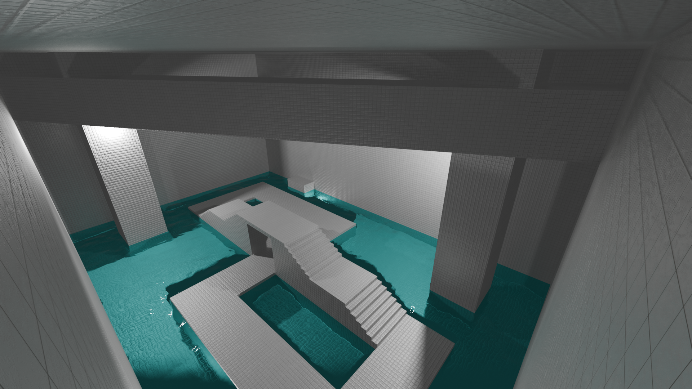
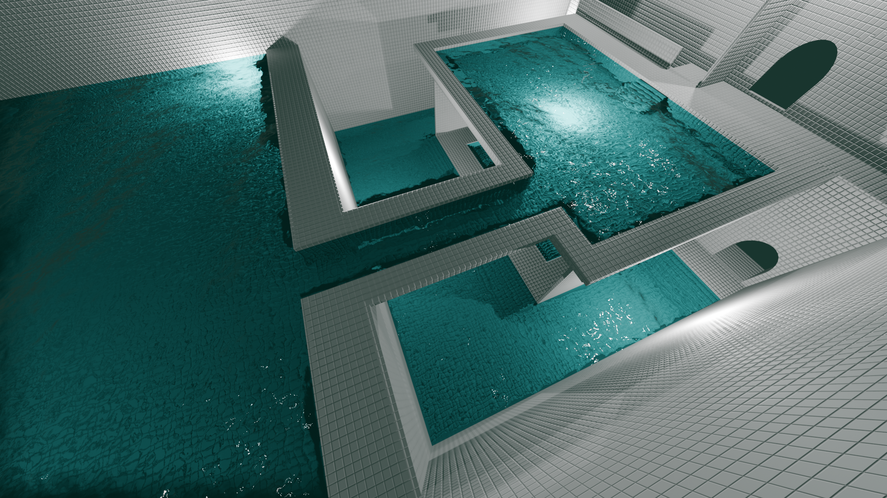
ほんの一時期だけ3DCGを触っていたことがあります。 まあ何かPoolroomsの真似事っぽいものを作って満足するというものでしたが（そしてタイルの目地合わせの面倒くささ+落水の流体表現に挫折ｗ） レイトレーシングってすごく美しくていいですよね……（本当に魔法みたい）
レイトレーシングを扱う動画で好きなのは、optozorax氏の、Portalについて扱ったシリーズです。
物体と光線の両方を、「定義したポータル面を通過すると、 別のポータル面から線形変換を行いつつ飛び出す」ようにしてるということかと思います（曖昧です）。 影とか光沢ではないけど、こうした不思議な空間を構成できるというのもレイトレーシングの楽しさなのかも。
線形代数については、今度は3×3行列について勉強中。 \(\begin{pmatrix}0&1&0\\0&0&1\\0&0&0\end{pmatrix}\)が、 \(\tau^3=0\) なるような「三重数」のように振舞うこととか、 核とか像とか余核とか「ジョルダン標準形」なるものについて勉強中です。
色々知ったかぶりしてみても結局高卒なので、地道に勉強あるのみ…… 「何か目指してるの？」と言われると、「いや特に……」という感じではあります（大人の自由研究ですね）
2026年2月1日
近況
- 仕事忙しめ。講習などもあり、あまりHPにアクセスできなかった。
- SunoAIを触ってVaporwaveっぽいのを狙ってました。いい感じに出たのを一つ置いておきます。
♪20260202.mp3
[Verse 1] スクリーンの海 指先だけ 生きている 「おかえり」と光る 知らない部屋の入り口 感情は終了しました 通知だけ まだ呼吸 雲になった履歴 ゆっくり＊＊＊中 [Chorus] 新鮮な虚無をダウンロード 未来はもう終わりました 「同意する」を押すだけ 高画質な孤独 リラックス死を選択中 完全な回復のフリ 夢の中でログインしてますか あなたは だれですか [Verse 2] ケータイの中に 昨日のあなたを保存 その思い出は圧縮されました 軽くて 触れられない 深呼吸もクラウドへ レンタルの涙 自分の影さえ サインインが必要 [Chorus] 新鮮な虚無をダウンロード 未来はもう終わりました 「同意する」を押すだけ 高画質な孤独 リラックス死を選択中 完全な回復のフリ 夢の中でログインしてますか あなたは だれですか - MathJaxが行列に対して動くか実験してみるか。
- \( \begin{pmatrix}1&0\\0&1\end{pmatrix} \) よし。せっかくなので自習したことをメモります。
★ 2×2行列に複素数や分解型複素数を埋め込む。
1. 単位行列 \(I = \begin{pmatrix}1&0\\0&1\end{pmatrix}\) を \(1 \in \mathbb{N}\) とみなし、\(\begin{pmatrix}x&0\\0&x\end{pmatrix} = x\in\mathbb{R} \)とする。
2. \( i=\begin{pmatrix}0&-1\\1&0\end{pmatrix} \) とおいて、 \( i^2 = \begin{pmatrix}-1&0\\0&-1 \end{pmatrix} = -1 \) （虚数単位 \(i\) とみなす）
3. \( j=\begin{pmatrix}0&1\\1&0\end{pmatrix} \) とおいて、 \( j^2 = \begin{pmatrix}1&0\\0&1 \end{pmatrix} = 1\) （分解型複素数の虚数単位 \(j\) とみなす）
4. \( \epsilon=\begin{pmatrix}0&0\\1&0\end{pmatrix} \) とおいて、 \(\epsilon^2 = \begin{pmatrix}0&0\\0&0\end{pmatrix}\)（冪零元。二重数 \(\epsilon\) とみなす）
※実は \( \begin{pmatrix}0&1\\0&0\end{pmatrix}\) も同じく二重数。
5. 行列の足し算によると、\( \frac{i+j}{2} = \epsilon \) が言える。（このあとすぐに \( (i+j)^2 = 0 \) を確認する）
6. \( ij = \begin{pmatrix}-1&0\\0&1\end{pmatrix} \)
7. \( ji = \begin{pmatrix}1&0\\0&-1\end{pmatrix} = -ij\)
8. \[ (i+j)^2 ~~ = ~~ i^2 + ij + ji + j^2 ~~ = ~~ 1 + ij - ij - 1 ~~ = ~~ 0 \] ※行列の積は非可換なので \(ij \neq ji \)。 \( i^2 + 2ij + j^2 \) とならないことに注意する。
9. \( \frac{I+ji}{2} = \begin{pmatrix}1&0\\0&0\end{pmatrix} = P_1\)（x方向の射影行列）
10. \( {P_1}^2 = P_1\)（\(P_1\) は冪等元）
11. \( \frac{I+ij}{2} = \begin{pmatrix}0&0\\0&1\end{pmatrix} = P_2\)（y方向の射影行列）
12. \( {P_2}^2 = P_2\)（\(P_2\) は冪等元）
13. 以上の \(\{I, i, j, ij \}\) は互いに線形独立であるため、任意の\( A \in M_{2}(\mathbb{R})\)は全て、 \[aI + bi + cj + d(ij) \]で表現される。つまり複素数と分解型複素数を同時に持つ代数は、\(M_2(\mathbb{R})\) を生成する……
14. \[ M_{2} (\mathbb{R}) \cong \mathbb{R} \oplus \mathbb{R} \oplus (反対角部分) \]と分解できる。 \(P_1 , P_2 \in \mathbb{R} \) が各スケール、反対角成分が回転や反射に対応する。
15. また、クリフォード代数 \(Cl_{1,1}\) について、 \[ M_{2} (\mathbb{R}) \cong Cl_{1,1}\] が言えるそうな……。
※クリフォード積というのは全然知らないのだけど、個々のベクトルが行列として表されるものらしい。 \[ \mathbf{v} = xe_1 + ye_2 \to x\begin{pmatrix}0&1\\1&0\end{pmatrix}+y\begin{pmatrix}0&-1\\1&0\end{pmatrix} = \begin{pmatrix}0&x-y\\x+y&0\end{pmatrix} \] として、クリフォード積 \( \mathbf{uv} = \mathbf{u\cdot v + u \wedge v} \) が成り立つそうな。 \[ e_1 \cdot e_2 = \frac{e_1 e_2 + e_2 e_1}{2} = \frac{ji+ij}{2} = 0 \] となり直交しているので内積成分は0。 \[ e_1 \wedge e_2 = \frac{e_1 e_2 - e_2 e_1}{2} = \frac{ji-ij}{2} = \frac{ji+ji}{2} = ji = \begin{pmatrix}1&0\\0&-1\end{pmatrix} \] こちらは2次元の外積なので面積成分。2026年1月27日
波形のこと
-
1周期ごとに正弦波と矩形波が切り替わる波形
(ph < 0.5) ? sin(4*pi*ph) : ((ph < 0.75) ? 1 : -1) -
1周期ごとに正弦波とノコギリ波が切り替わる波形
(ph < 0.5) ? sin(4*pi*ph) : (2*((( (ph-0.5)*2 ) + 0.5) % 1) - 1)
2026年1月26日
久しぶりの日記？
Max9を色々勉強していたのですが、特段成果が上がらなかったため書きませんでした。（とか言いつつ、一応t b iって何よ、くらいは把握はしましたがｗ）
ぼーっとしていると、すぐ自分に縛りを課してしまいます。 ……とは言いつつ、「別に何もしてなくてもいいじゃないの、日記を書くだけでも」とも思うのですが。
……でも毎日書いていると、それはそれで「こいつ、日常を特に考えずに生きているな」とバレそうなので、 だいたいこれくらいの頻度くらいがちょうどいいのかもしれません。 そして、今日は書くネタがあるぞ、ということです（笑）
仕事が閑散期気味なのもあり、土日の24, 25日と函館に1泊2日してきました。 移動は車。道中、雪がすごいことになってホワイトアウトしかけ、 「ワンチャン本当に死ぬなこれ」と思ったりもしたものの、なんとか行き来できました。
朝市、五稜郭、ラッキーピエロ、函館山、赤レンガ倉庫、ハセガワストアの焼き鳥弁当…… と楽しんできました。ラッキーピエロは二回行きました。 ウワサのチャイニーズチキンバーガー、それと社長と大泉洋一押しのラッキーエッグバーガーを食べましたが、確かに美味しい！ あとハセガワストアの焼き鳥弁当もガチで美味しいです。コンビニの中で店員さんが炭火で焼いてるんだもん、すごいですよね。タレの味が「普通よりしょっぱい寄りの甘辛」で、ご飯が進みまくります。 五島軒のカレーも食べたかったけど、日程が足りなかったあぁ……！
修学旅行の時に行ったきりだったのですが、大人になって来てみると、札幌と比べてまた違うというか、 ペリー来航以来ずっと外国人を受け入れてきた港町だけあるなーというか、 アピールの仕方が洗練されているというか……つまるところ「いい意味で観光地らしい」んだなということに気づきました。
朝市。海鮮丼がめっちゃ美味しかった（あまりの空腹のため写真を撮り忘れた……）。 イカのゴロの刺身なんてものを頼んでしまいました（痛風になるぞ）。半分凍ったルイベ状態で出てきました。うんめぇ。
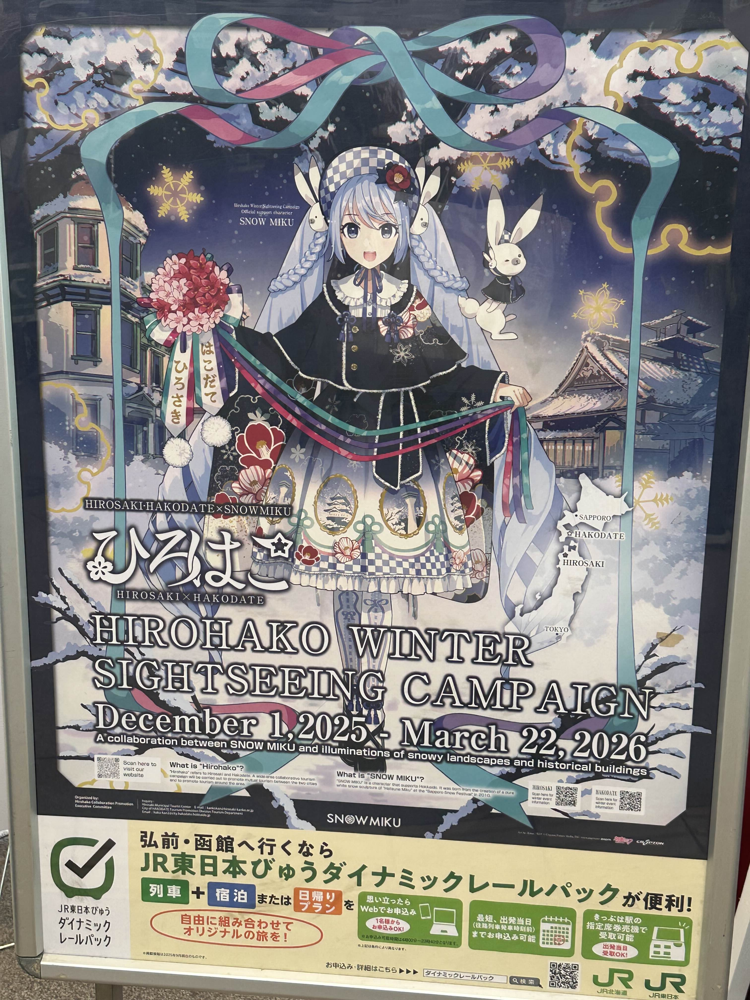
あちこちに雪ミクさんのポスターが貼ってありました。 ンン˝めんこいねぇ……すっかり北海道の観光大使じゃないですか。 弘前市とコラボしているらしい。青森だから、青函トンネルつながりとかそういうのかも。
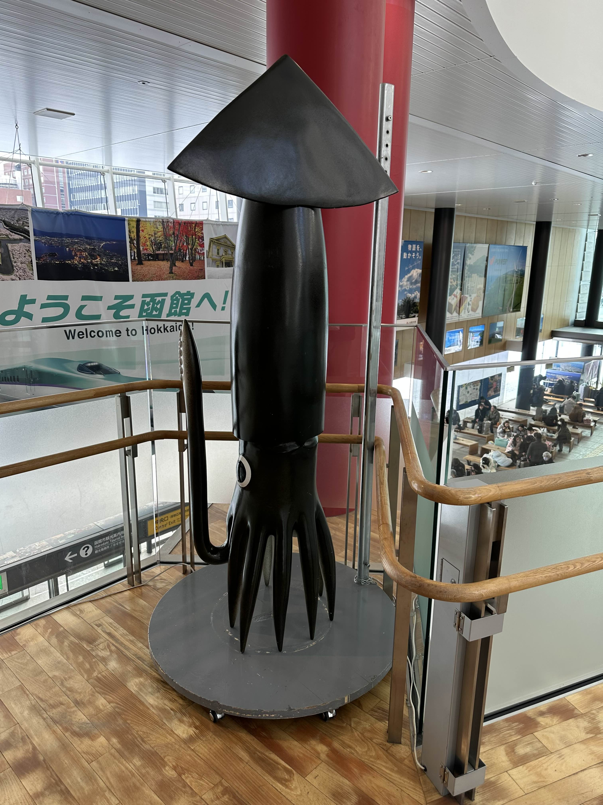
函館駅二階。「よう」みたいなイカのオブジェがかわいい（本当は両側腕が両方上がっている）。 1954年の洞爺丸事故の資料が展示されていました。 台風に襲われ、沖に出たもののかなりの数の船が転覆沈没してしまった大惨事とのことです。恥ずかしながら初めて聞きました。 1954年って言ったら、実家のばーちゃんがまだ若かった頃のことです。 JRの駅にこういう展示があるのは、電車と船の連携がやっぱり今でも重要だからなんでしょうかね。
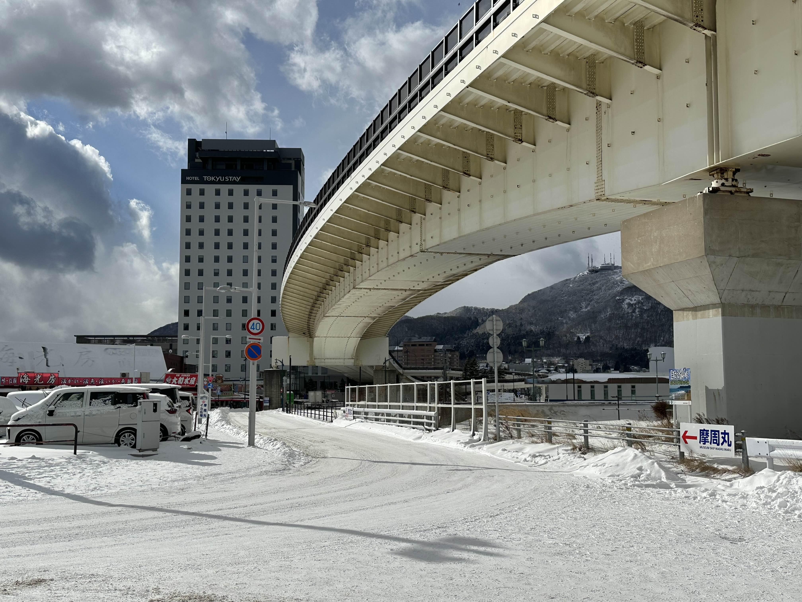
かっこいい高架の曲線。下から見ると、路面になる部分も結構張り出していることがわかります。 こういう立体的な構造物が、平面的なシッソイドなどを下支えしていると思うと、 なんかめちゃくちゃ興奮しますね……！
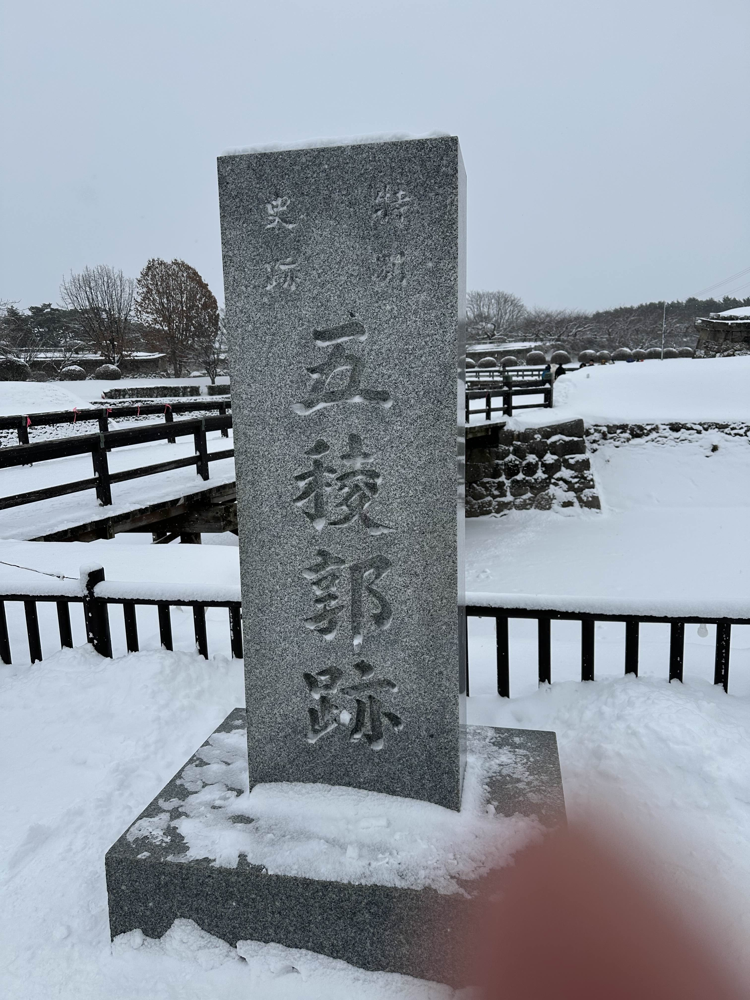
五稜郭石碑（親指が写り込んでますねｗ）
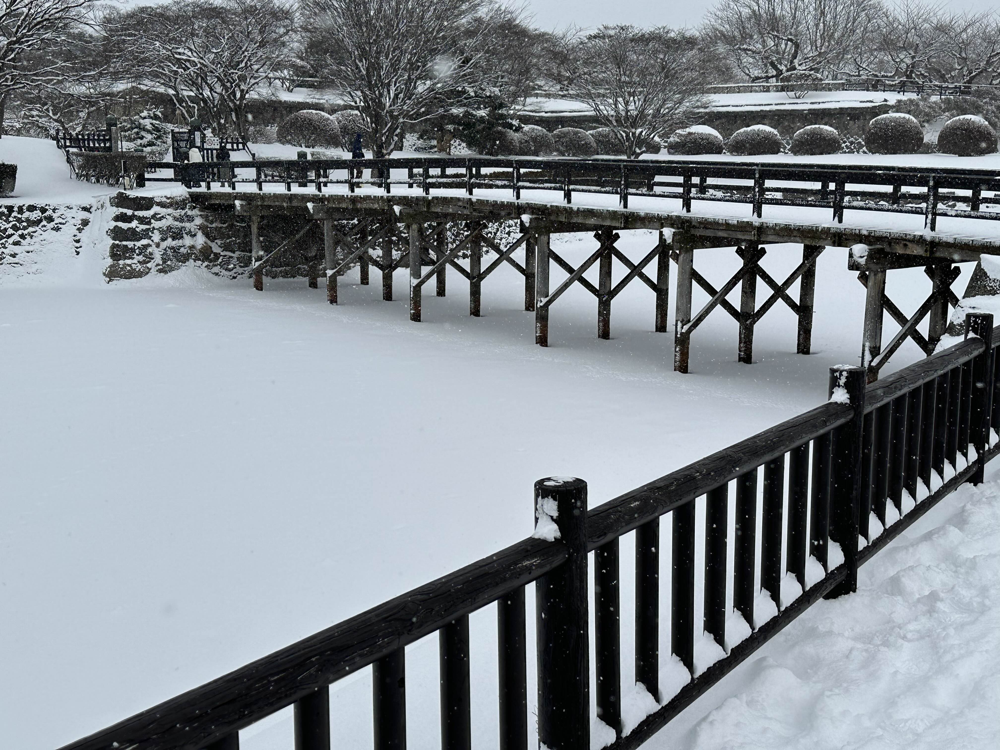
堀の上に架かった二の橋（雪で見えないけれど、冬季間も水が通っているのだと思います。水面は凍ってるのかも？）。 橋脚は赤く錆びてたので恐らく鉄製なのかな。趣深いです。
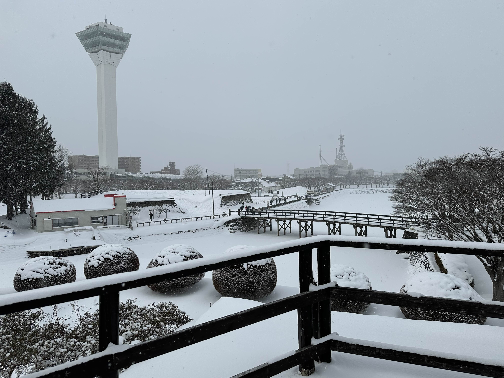
見隠塁の突端から五稜郭タワーを撮影。めっちゃ雪。橋の角度とかが面白いですよね。
実は前々から、「平面プランとして確かに綺麗だけど、なんでよりにもよって五角形なんだろう。作りづらそうじゃない？」と思っていたんだけど、 実際に塁に登ってみると、なんだか思った以上に迷宮感というか、独特な角度が連続するせいか空間識が狂う感じがあって面白いです（私の空間識がよわよわなだけかもしれませんが……ｗ）
当時の設計者は蘭学者の武田斐三郎（たけだ-あやさぶろう）という人で、フランスの築城術を参考にしたそうです。 単に「全方位に対して稜になっている角から火砲を射撃可能」みたいな感じで火力的にいい、ということだと思うけど、 攻め込む側にしてみれば、この形状がある種の迷宮としても機能するのかもしれない？（などと適当にボルヘスごっこをしてみるテスト……）
五稜郭は内部の「箱館奉行所」（当時の役所） が復元されていて、中がかなり面白かったです。
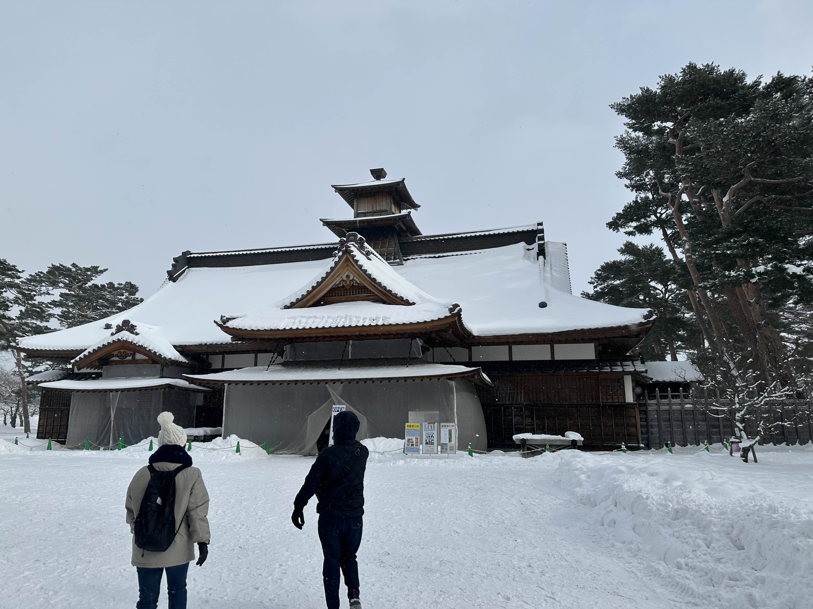
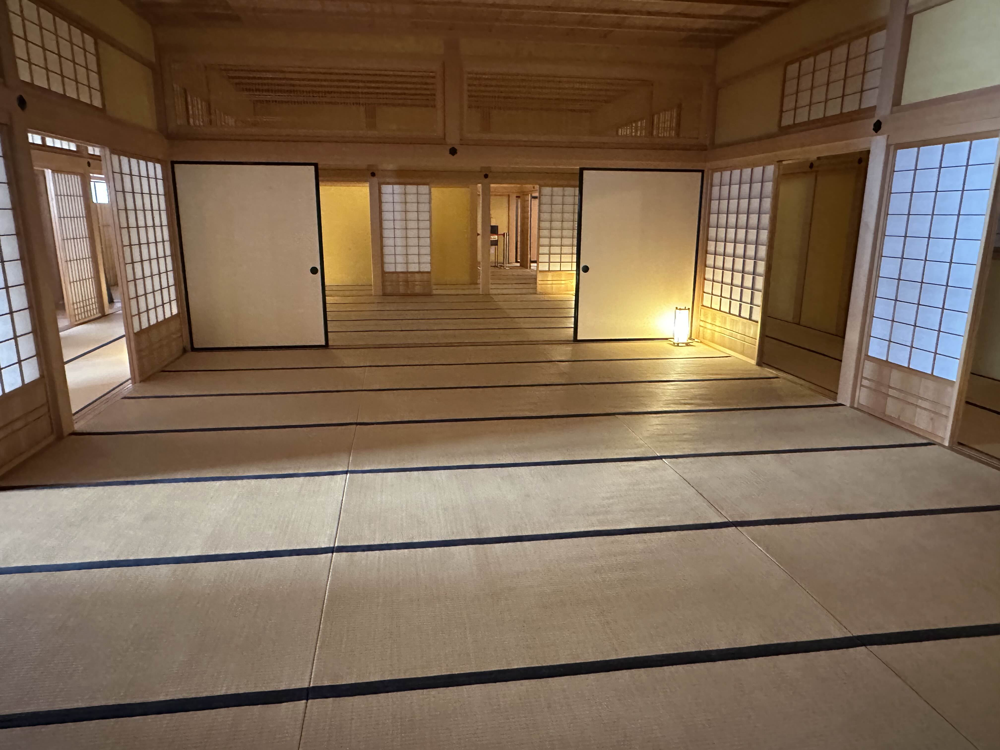
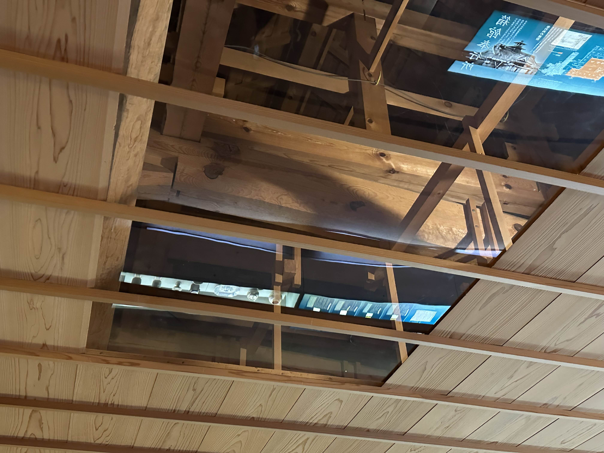
一部天井がアクリル貼りか何かになっていて見えるのですが、 9m, 10mと平気でスパンが飛ぶので、小屋組みの梁はぶっとい。 500mmくらいあるんでないの？ こりゃー迫力すごいわ……。……と現地にいる時は思ったのですが、 あまりうまく撮れておらず、伝わらないですよね。致命的に写真が下手！
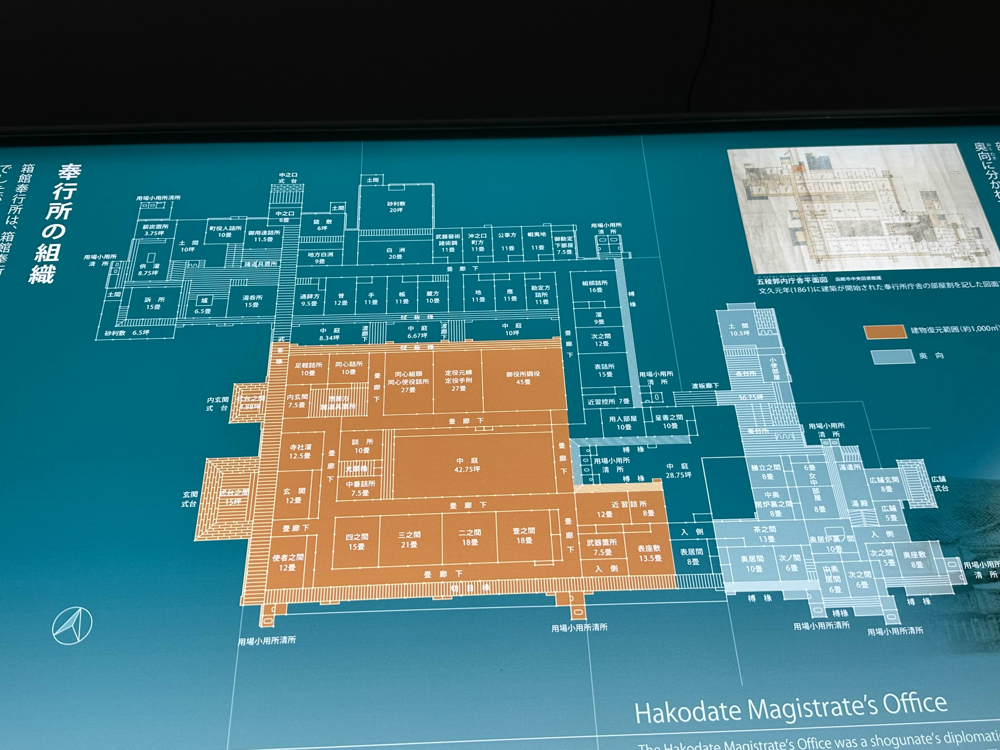
平面図。広いねぇ。オレンジ部分が再現されている部分のようです。 撮影し忘れたのですが、当時の土木工事や建築工事の、予算と実際の出費も書いてありました。 土木工事がかなり安く済んだ分、建築側にかなり持ち出した雰囲気でした。 思ったより地盤が良かったためにウワモノ部分が追加されていった、 あるいは建築がかなり高くついてしまったために土木の方をある程度削減したとか？（後者の方がありそうな気はしますね）
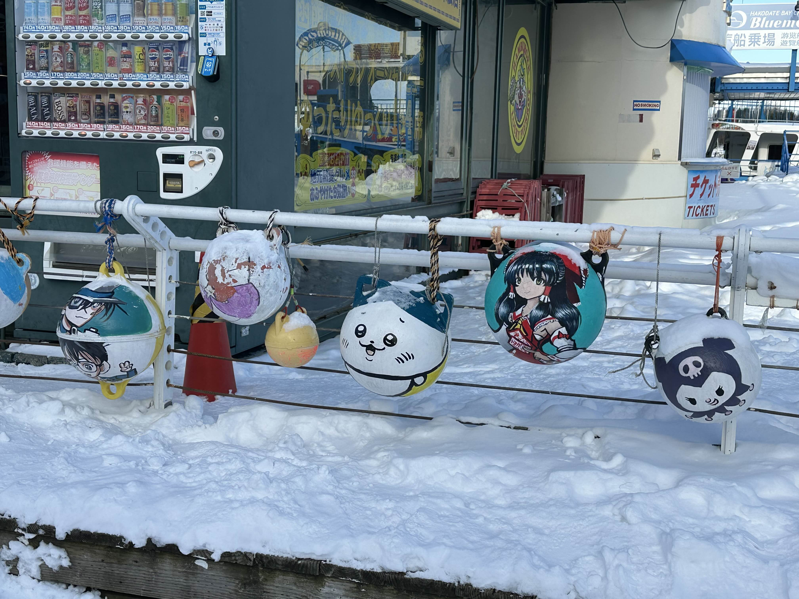
ラッキーピエロそば、ブイに色んなものが描かれている。 「ゴールデンカムイ」とコナンの「100万ドルの五稜郭」は街の中のどこでもだいぶプッシュされてました。 聖地巡礼の人も多そう。そしてなぜか博麗霊夢。幻想郷の巫女、函館の海に現る……！（幻想郷には海はないらしいですね）
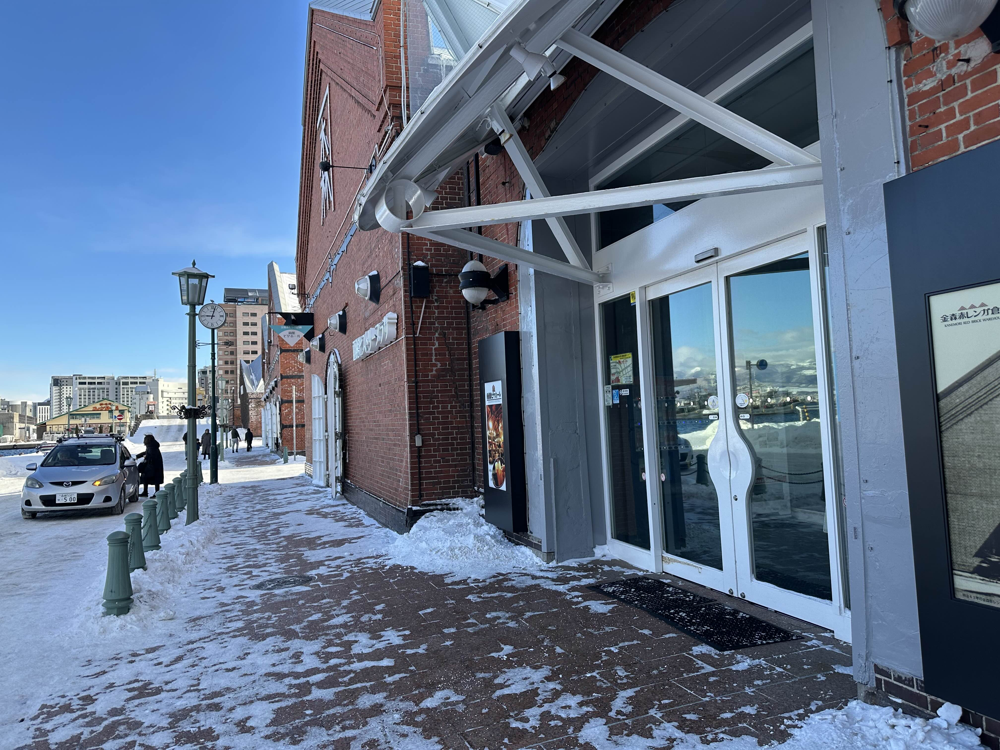
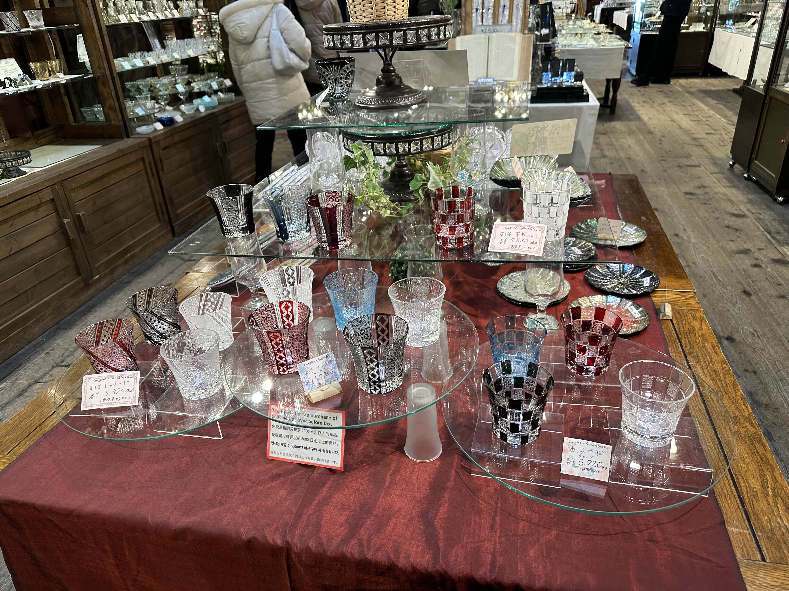
赤レンガ倉庫。中のガラス工芸店でガラスペンや切子など色々見て回る。綺麗すぎる……！
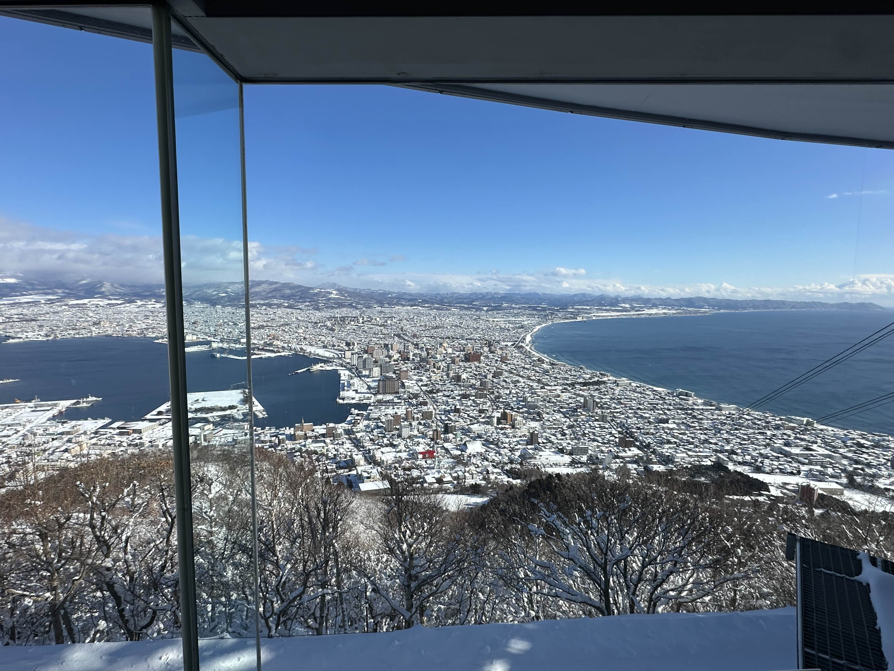
函館山の上より。よく見る「北海道の左下の、あの細くなってるところじゃないやつ」ですｗ （生まれも育ちも北海道の私も、中学の修学旅行当時、夜景バージョンのこちらを見ながら「あの細くなってるところがここか～」と思ってましたｗ） 湾内の船やクレーンとかも気になっていて、いっぱい写真を撮れば良かったのですが、屋外展望台は特に寒かったのであまり撮れませんでした。

「ブラキストン線」で有名なブラキストンさんの記念碑が函館山の上にありました。石碑と化し、もはや寒さを感じることもなく、函館の湾を永く見下ろし続ける格好です。和洋問わず、偉人というのは大変なものですね……（？） ブラキストン線というのはある種の電磁波……ではなく、津軽海峡を通る動物相の分布境界線のことです。 この辺で哺乳類とか鳥類とかの分布がガラッと変わるらしい。おそらくですが、多分寒くて死ぬのでしょう……（寒いしか言ってないですね……ｗ）
帰りの車はヤバくて、特に長万部付近なんか高速は通行止めになるし、下道降りても吹雪いてるし、なのに後続車はブンブン抜かして行ったりする。 マ、マジ……？ おそらくですが、彼らは全員路外転落で死んだでしょう……（んなわけあるか）
吹雪で前が全然見えなくなり、ワイパーも凍り付き始めて大ピンチ。 「神様（トラピスト修道院の前を通り過ぎただけだけどｗ）助けて～！」とか思いながら運転していました。 さすがに途中からみんなハザード点けて徐行運転になってましたね……。
千歳付近もほとんど通行止め状態だったみたい。 苫小牧で下道に下りて迂回して、なんとか無事に帰宅できました。 疲れたよーマジで！ ……でも楽しかったなぁ。
2026年1月15日
音階を計算するためのJavaScriptプログラムを作った
13日のことだけど、眠くて日記とトップの更新が遅れた。
008はいわゆる Tenney-Euclidean Tuning, Pure Octave Tenney-Euclidean Tuningを計算するプログラムにした。 モード次第でPure Tritaveやら色々なものも計算できるようにしている。
問題意識
純正律では「ド→ソ→レ→ラ→ミ」と五度（3/2）を4回重ねるとミが得られる。 だが、このミ（81/64）と、倍音列から直接得られるミ（5/4 = 80/64）は微妙にズレている。 このズレ（81/80＝シントニックコンマ）をどう「均す」かが、TE Tuningの仕事だ。 歴史的には4分割して五度から割り引いたりしてきたのだが、数学的には最小二乗法を使うというアプローチがありえる。 音程の関係を表す行列（Mapping V）を定義して、そこから最小二乗法によって倍音列の近似を自動計算する手法を作る。
例
マッピング[1 0 -4 ; 0 1 4]は「2, 3, 5をどう近似するか」のレシピ。
例えば今回は、g1をオクターブ、g2を第三倍音とする。
- 2（オクターブ）→ g1 を1回
- 3（第三倍音）→ g2 を1回
- 5（第五倍音）→ g1 を-4回、g2 を4回
使い方
このスクリプト上でのMapping V の書き方は、[v11 v12 v13 ... ; v21 v22 v23, ...]という型になる。
まず g1 と g2 と …… という仮想ジェネレータを想定する。 n 個の仮想ジェネレータを組み合わせ、 n より多い個数の Prime basis Q を表現すれば、 仮想ジェネレータを均していい感じに倍音関係を調節したジェネレータが得られる、というのがこのスクリプトだ。
Mapping Vの作り方
今回、Prime basis Q は、2,3,5 の4次元とする。g1, g2 は上と同じくオクターブと第三倍音とする。
Prime basis Qのうち、2は \( 1g_{1} + 0g_{2} \) と表現できる。そのため、\( [g_{1} ; g_{2}] = \)[1 ; 0]と置けばよく、またこれがそのまま[v11 ; v21]に対応する。
3は、 \( 0g_{1} + 1g_{2} \) と表現できるので、こちらは[0 ; 1]に対応し、これがそのまま[v12 ; v22]に対応する。
つまりここまでで、[v11 v12 v13 ; v21 v22 v23] =[1 0 ? ; 0 1 ?]が得られている。
残りを埋めていくために、Prime basis Q の 5 を検討していく。第五倍音の表現法として、第三倍音の4階積層ド→ソ→レ→ラ→ミとしてミが得られる事実を活用する。
するとこれは \( 3^{4} = 81 \) だが、\( 2^6 = 64 < 81\) なので、この「ミ」は6オクターブ上だ。 欲しいのは2オクターブ上のミなので、4オクターブ= \( 2^{4} = 16 \) だけ序して、 欲しいのは \( 81/16=2^{-4} \cdot 3^{4} \) である。
すなわち \( -4g{1} + 4g{2} \) こそが 5 の表現なので、[v13 ; v23]=[-4 ; 4]、 つまり全体としては[1 0 -4 ; 0 1 4]が正解となる。
遊び方
つまり、g1 と g2 を 好き勝手に置いてみて、それで色んな倍音を再現してみて、色んな音階を作ってみようぜ！ ということです。
2026年1月11日
AIイラスト
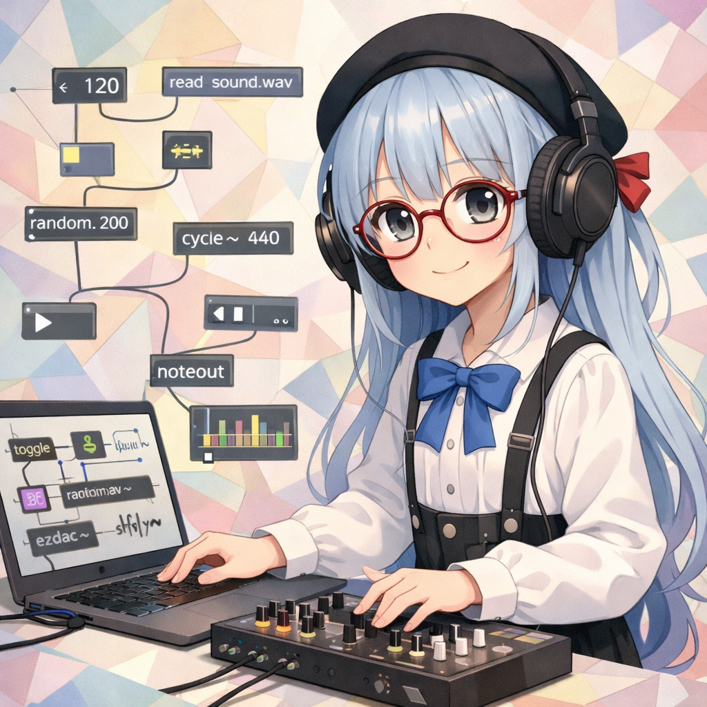
正月休みにMax9を触っているかずのこちゃんのイラストを、ChatGPTに描いてもらいました。
実はChatGPTと（表現規制やらAIを使った創作やら男女論周りやらで）このあいだ大喧嘩しました。 「いちいち上から目線でアドバイスしやがってからに！💢」みたいな感じで……。
終わってから「自分は本当のバカだ……何してんだろう……」と感じました。 「AI相手に何してんだ」という虚無感もそうだけど、普段お世話になっているのに失礼だったよなあとも……。 解決策とかでなく、単に愚痴を聞いてほしいだけなのだったら、最初にそう言えば良かったのに、私が馬鹿でしたね……。 （まあでも5.0以降はかなり「アドバイス好き」の性格なので、愚痴ること自体にあまり向いてなさそうな感じはある）
体調は？
風邪がほぼよくなり、咳はたまに空咳が出るくらいになりました。 ただ、頭が痛かったり、胃痛があったりはします。正月太りした気がするので痩せたいね。
散発的にMax9を触っています。 Live12付属のものだと、gen~の中のcodeboxをいじると しばしば「Save Disabled」となって保存できずにストレスフルだったため、 けっきょく単体のMax9をサブスクしてしまいました。これで快適に遊べる。
fendoapさんの「多角形シンセ」を真似したかったので作ってみました。 音が大きくてびっくりしたらごめんなさい。
構成はこんな感じ。
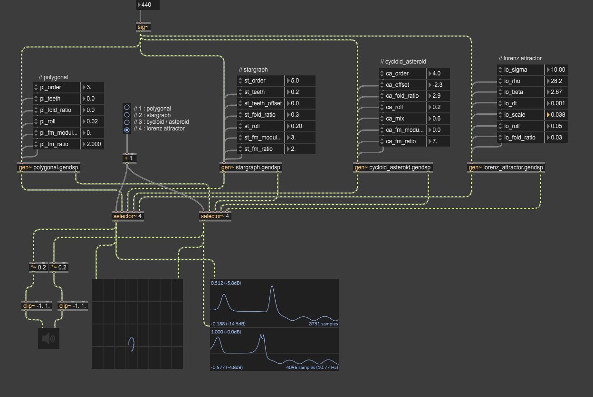
sig~は与えられたintまたはfloatをオーディオ信号に変換するオブジェクトです。 それを各gen~に渡します。左から順に多角形、星型、サイクロイド・アステロイド、ローレンツアトラクタ。gen~の内部にてParam hogeで定義されているパラメータがあり、 それを外側からいじるためにattruiで入力する形を取っています。
selector~ 4でどれが鳴るかを選択して、scope~およびezdac~に送っています。selector~ 4の一番左のインレットに繋がっているのはradiogroupですが、 これは0～3を出力するので、あらかじめ+ 1を噛ませて1～4に変換しています。
参考にした記事はこちらとこちらです。gen~の中身については、以下のようになっています。
polygonal.gendsp // 多角形シンセのgen~コード
Param pl_fm_ratio(0, min = 0, max = 10); Param pl_fm_modulation(0, min = 0, max = 100); Param pl_order(4, min = 2.1, max = 50); Param pl_roll(0, min = -1000, max = 1000); Param pl_teeth(0, min = 0, max = 1); Param pl_fold_ratio(0, min = 0, max = 20); pl_theta_zero = pi / pl_order; pl_fai = twopi * phasor(in1 + pl_fm_modulation * in1 * cycle(pl_fm_ratio * in1)); pl_rotate = twopi * phasor(pl_roll); pl_shape = (pi * (pl_order - 2)) / (2 * pl_order) * pl_teeth; pl_theta = 2 * pl_theta_zero * ((pl_fai * pl_order / twopi) % 1); x = cos(pl_fai + pl_rotate) * (cos(pl_theta_zero + pl_shape) / cos(pl_theta - pl_theta_zero + pl_shape)); y = sin(pl_fai + pl_rotate) * (cos(pl_theta_zero + pl_shape) / cos(pl_theta - pl_theta_zero + pl_shape)); out1 = fold((pl_fold_ratio + 1) * x, -1, 1); out2 = fold((pl_fold_ratio + 1) * y, -1, 1);
stargraph.gendsp // 星型シンセのgenコード
Param st_fm_ratio(0, min = 0, max = 10); Param st_fm_modulation(0, min = 0, max = 100); Param st_order(5, min = 2.1, max = 50); Param st_roll(0, min = -1000, max = 1000); Param st_roll_offset(0, min = -6.283185, max = 6.283185); Param st_teeth(0, min = 0, max = 1); Param st_teeth_offset(0, min = -3.141593, max = 3.141593); Param st_fold_ratio(0, min = 0, max = 20); Param st_epsilon(0.0001, min = 1e-8, max = 1e-2); st_n = st_order; st_an = twopi / st_n; st_fai = twopi * phasor(in1 + st_fm_modulation * in1 * cycle(st_fm_ratio * in1)); st_rotate = st_roll_offset + twopi * phasor(st_roll); st_shape = st_teeth * (pi * (st_n - 2)) / (2 * st_n) + st_teeth_offset; st_theta = st_an - (1 / st_n) * acos(cos(st_n * st_fai)); st_den = cos(st_theta + st_shape); st_sgn = (st_den >= 0) ? 1 : -1; st_den_safe = st_sgn * max(abs(st_den), st_epsilon); st_scale = cos(st_an + st_shape) / st_den_safe; st_x = cos(st_fai + st_rotate) * st_scale; st_y = sin(st_fai + st_rotate) * st_scale; out1 = fold((st_fold_ratio + 1) * st_x, -1, 1); out2 = fold((st_fold_ratio + 1) * st_y, -1, 1);
cycloid_asteroid.gendsp // サイクロイド・アステロイドシンセのgenコード
Param ca_fm_ratio(0, min = 0, max = 10); Param ca_fm_modulation(0, min = 0, max = 100); Param ca_order(4, min = 0.1, max = 50); Param ca_roll(0, min = -1000, max = 1000); Param ca_roll_offset(0, min = -6.283185, max = 6.283185); Param ca_teeth(0, min = 0, max = 1); Param ca_teeth_harm(5, min = 1, max = 64); Param ca_teeth_bias(0, min = -1, max = 1); Param ca_offset(0, min = -5, max = 5); Param ca_fold_ratio(0, min = 0, max = 20); Param ca_epsilon(0.0001, min = 1e-8, max = 1e-2); Param ca_mix(0, min = 0, max = 1); ca_a = max(ca_order, 0.0001); ca_b = 1; ca_th = twopi * phasor(in1 + ca_fm_modulation * in1 * cycle(ca_fm_ratio * in1)); ca_rot = ca_roll_offset + twopi * phasor(ca_roll); ca_tb = clamp(ca_teeth_bias, -1, 1); ca_teeth_wave = (cycle(ca_teeth_harm * ca_th + ca_rot) + ca_tb); ca_rmod = 1 + ca_teeth * 0.25 * ca_teeth_wave; ca_R_plus = (ca_a + ca_b + ca_offset) * ca_rmod; ca_r_small = (ca_b + ca_offset) * ca_rmod; ca_R_minus = (ca_a - ca_b + ca_offset) * ca_rmod; ca_r_small2 = (ca_b + ca_offset) * ca_rmod; ca_o1 = ca_R_plus * cos(ca_th + ca_rot) - ca_r_small * cos(((ca_a + ca_b) * ca_th / ca_b) + ca_rot); ca_o2 = ca_R_plus * sin(ca_th + ca_rot) - ca_r_small * sin(((ca_a + ca_b) * ca_th / ca_b) + ca_rot); ca_o3 = ca_R_minus * cos(ca_th + ca_rot) + ca_r_small2 * cos(((ca_a - ca_b) * ca_th / ca_b) + ca_rot); ca_o4 = ca_R_minus * sin(ca_th + ca_rot) - ca_r_small2 * sin(((ca_a - ca_b) * ca_th / ca_b) + ca_rot); ca_den_epi = max(sqrt(ca_R_plus * ca_R_plus + ca_r_small * ca_r_small), ca_epsilon); ca_den_hypo = max(sqrt(ca_R_minus * ca_R_minus + ca_r_small2 * ca_r_small2), ca_epsilon); ca_x_epi = 0.7 * (ca_o1 / ca_den_epi); ca_y_epi = 0.7 * (ca_o2 / ca_den_epi); ca_x_hypo = 0.7 * (ca_o3 / ca_den_hypo); ca_y_hypo = 0.7 * (ca_o4 / ca_den_hypo); ca_m = clamp(ca_mix, 0, 1); ca_x = (1 - ca_m) * ca_x_epi + ca_m * ca_x_hypo; ca_y = (1 - ca_m) * ca_y_epi + ca_m * ca_y_hypo; out1 = fold((ca_fold_ratio + 1) * ca_x, -1, 1); out2 = fold((ca_fold_ratio + 1) * ca_y, -1, 1);
lorenz_attractor.gendsp // ローレンツアトラクタシンセのgenコード
Param lo_epsilon(1e-9, min=1e-9, max=1e-9); Param lo_sigma(10, min=0, max=50); Param lo_rho(28, min=0, max=100); Param lo_beta(2.6666667, min=0, max=10); Param lo_dt(0.001, min=1e-6, max=0.02); Param lo_scale(0.04, min=0, max=1); Param lo_roll(0, min=-1000, max=1000); Param lo_roll_offset(0, min=-6.283185, max=6.283185); Param lo_fold_ratio(0, min=0, max=20); History x(0.1); History y(0); History z(0); dx = lo_sigma * (y - x); dy = x * (lo_rho - z) - y; dz = x * y - lo_beta * z; h = max(lo_dt, lo_epsilon); x = x + h * dx; y = y + h * dy; z = z + h * dz; ang = lo_roll_offset + twopi * phasor(lo_roll); xr = cos(ang) * x - sin(ang) * y; yr = sin(ang) * x + cos(ang) * y; out1 = fold((lo_fold_ratio + 1) * (lo_scale * xr), -1, 1); out2 = fold((lo_fold_ratio + 1) * (lo_scale * yr), -1, 1);
……しかし、この日記を書きつつ、結構しっかり何が書いてあるのかをVSCodeが理解してくれるのでびっくり。
2026年1月4日
三が日も終わって
妹夫婦に会ったり、実家でお雑煮などを食べたり、古くからの友達に会ったりしながら過ごしていました。 実家には一瞬だけ親類（いとこ一家が三世代総出で来た）合計13人も集まったので、私はコミュ障を大いに発揮してしまうことに。 友達もちらほらめでたい話も（そしてそれとは別に大変そうな話も）聞こえてきて、なんだかしんみりするやら。
友人きっての願いでラーメンの山岡家に。「正月からすまん、でもどうしても食べたかったんだ」とのことで、まあ我々も久しぶりなので喜んでご一緒することに。 思ったよりも客が多い！ 1月2日からやってるラーメン屋ということで需要が高かったのかもね。 においは以前の通りクセ強系だけど、こってりしていて美味しかったです。 それから業務スーパーで軽く買い出し、家で飲み会など。最近は友人の仕事の話を聞くのも割と楽しかったり。
その後、「千と千尋の神隠し」がテレビでやっていたので（実は通しで見たことがなかった）「いや面白いなこれ」とか話しながら見たり （カオナシは私の中の「存在しない（？）妹」への憧憬みたいなものを描き出してるような気がした。千尋可愛すぎるだろ、あんなん恋するって）、 その後、友人の一人が買ってきてくれた「マリオパーティージャンボリー」をやったりして夜は更けていくのでした。 「えらんでブロックロード」が凄まじい神ゲーだった。ミクロな限定ジャンケン（？）気分。
なんだかんだで楽しい正月休みでしたが、情報量が多すぎて、最終的にヘンな夢を見ました……（ｗ 「千と千尋」みたいな世界観の、しかしダンボールで出来た4畳半の建築（無限に高い）を、ほんの僅かな足場を使って、 登ったり降りたり……最終的に足場のアンカーがすっぽ抜けて、「うおおおお！」とダンボールの壁に蹴りを入れて突き破ってなんとか止まる、みたいな……。
Max9でまた遊んでいます。
poly~とかを触る前に、まずは基本を押さえようと思って、 チュートリアル に回帰。buffer~とcycle~を使ってウェーブフォームを繰り返すシンセを触ってみよ～と思ってやってはみるものの、 まだるっこしいというか、上手く切り抜けずガガガガッとなったので、むしろ波形をgen~と数式で書いてみることに。 既にやっているJavaScriptでの数式シンセと似たような感じです。
gen~内のin 1とout 1はオーディオ信号の入出力を表している。消したら鳴らなくなる。codebox内に数式を書いていく。sinだけじゃなくabsとかも効くので、全波整流を試す。 DC成分（定積分で出てくる値）が乗るのでdcblock~でカット……と思いきやNo such object.（これは環境次第らしい）。 ならばhip~ 5.（ハイパスフィルタ。周波数0Hz成分らしいのでこれで切れるらしい。ほえ～）でカット……と思いきや、 PureDataにはhip~があるけどMaxにはないらしく、cross~とかを使って上手に組んでいく必要があるらしい。 そこまでいくと趣旨がずれるので、ChatGPTに聞いてgen~内でDC処理については書いてもらってしまった。
っていうかgen~を試そうとしたら最初半透明のウィンドウが出て来て、 あれ？と思ったらコンソールにbpatcher: error loading patcher gen~とか出て来やがって、 調べたらMax9のインストールがうまくいっていなかったらしい。結局再インスコですた。zipもLhaplusだとうまく開かなかったし、 インストーラも空ディレクトリに展開する時に「なんかもうファイルあるけど」とか言ってくるし……。 まあ再インストールでちゃんとgen~も復活したのでよし。 とにかくこれで（DSL導入とか調律法の導入とか必要かもしれないけど）まがりなりにも数式で波形を宣言してMax上で動かせるようになったってこと……？ ……と言っても まだポリシンセ化で引っかかってるのか。はは……。とにかく、次は変調あたりを試すかもしれません。それかJitコマンドあたりか。
2026年1月1日
あけましておめでとうございます。
今年もどうぞよろしくお願い致します。
Max/MSPで年越ししていました。「coll」という機能を使ってシーケンスを作ってみました。metroとcounter 0 7で一歩一歩出力してます。 intで指定したmidinoteをmtofで周波数に変換して、cycle~で音波を作ると。collは中身を開くのが最初わからなかったのですが、こっちはカギモードからダブルクリックで開ける。
あとpoly~に挑戦していたのですが、こっちはかなり厄介で今回は安定せず断念。 ものとしてはmaxpatで定義されたボイスを指定した数だけ同時に鳴らせるというものなのですが、 その定義が多分うまくいっていないんだと思います。thispoly~というのを入れないといけないっぽい。 collの書き方も面倒くさくなってきますね。出来ればcounter -> collでまずカウンターとコードネームを紐付け、 それからcoll -> collでコードネームから3和音を引っ張ってくるとかが簡単なのかな。
でもボイシングとか考えるとやっぱりcoll一個で済ませるのが合理的になりそう。
っていうかまあ実用的にはMidiで打ち込んでしまったものをMax/MSPのpoly~で鳴らすとかが出来ると嬉しいのだけど。
というか今見るとチュートリアルをかなり飛ばしている。一歩一歩進めた方がいいんだろうな。変調器あたりから作りましょうか。 あと接尾辞（？）として~がつくものはって何？ と思っていたら日記を書いているVSCodeが丁寧に教えてくれました。 オーディオ信号を扱うオブジェクトには~がつくのだそうです。なるほどね。 AI補助を受けて日記を書いています（ｗ
- y=0 のとき：
{kind=link}
{kind=link}
{kind=link}
{kind=link}
{kind=link}
{kind=link}
{kind=link}
{kind=link}
{kind=link}
{kind=link}
{kind=link}
{kind=link}
{kind=link}
{kind=link}
{kind=link}
{kind=link}
{kind=link}
{kind=link}
{kind=link}
{kind=link}